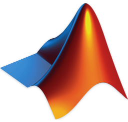
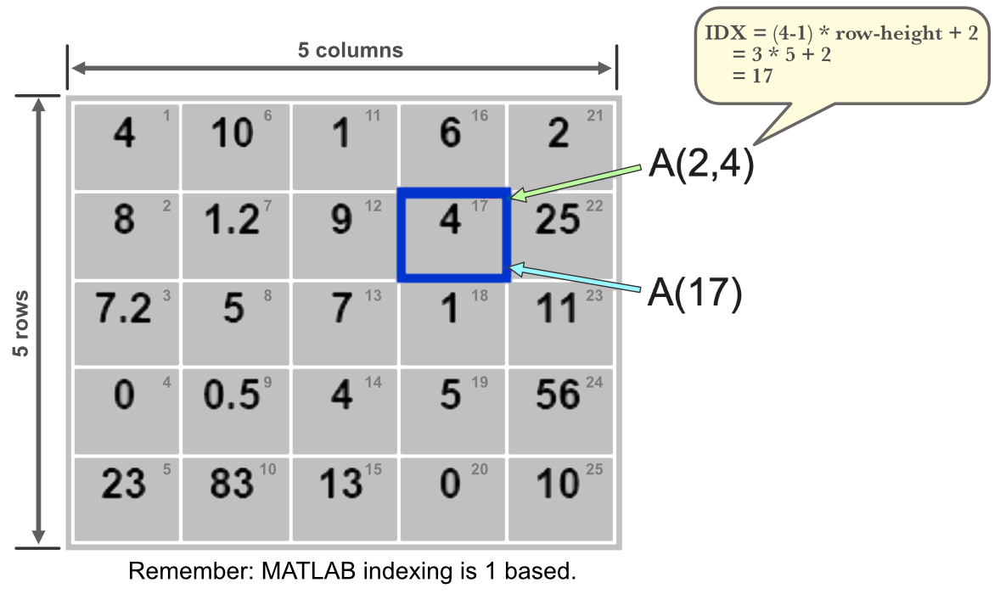
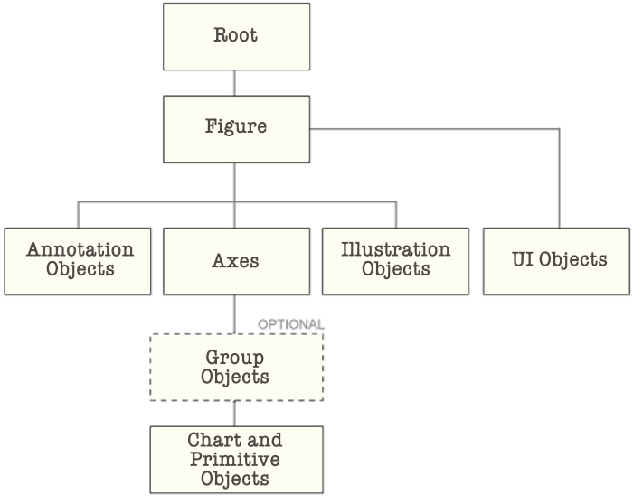
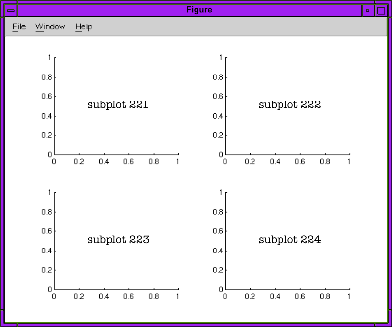

Matlab Reference
A very abridged reference
Overview

MATLAB (Matrix Laboratory), owned by MathWorks, Inc., is a proprietary multi-paradigm programming language and numeric computing environment developed by MathWorks. It is widely used for engineering and scientific applications such as data analysis, signal and image processing, control systems, and robotics, integrating computation, visualization, and programming in a user-friendly environment.
MATLAB is primarily an interpreted language, but it incorporates a Just-In-Time (JIT) compiler to enhance performance. MATLAB can be run outside its IDE. Users can compile MATLAB applications into standalone executables using the MATLAB Compiler. These compiled applications can then be executed on computers that do not have a full MATLAB installation, provided the MATLAB Runtime is installed.
Code
Line Termination
Who would have guessed that the Terminator 🤖 is a semicolon. Semicolons are optional but important. They control output display.
The Rule
- With semicolon (
;): Suppresses output to command window. - Without semicolon: Displays the result.
x = [1, 2, 3] % Displays: x = [1 2 3]
y = [1, 2, 3]; % Suppresses output (silent)
disp('Hello') % Still displays "Hello" (disp always shows output)
disp('Hello'); % Also displays "Hello" (disp ignores semicolons)Best Practice
Our feeling is just use them. If you want to write something to stdout then explicitly write it using one of the output methods.
Lean Machine
- Use semicolons for assignments and calculations (keeps workspace clean)
- Functions like
disp(),plot(),subplot()don’t need them since they don’t return values to display
Line Continuation
The line continuation operator is ....
vname = "name";
value = 10;
sprintf(["The current value " + ...
"of %s is %d"],vname,value)Help
MATLAB has built-in help 🎉. There are a few ways to tap into it: help, doc, examples and docsearch. The last fella (docsearch) opens a tab in your default browser.
% opens the same page as `doc` (https://www.mathworks.com/help/releases/R2025b/index.html)
docsearch
% opens a dynamic page with search results
docsearch plottinghelp Command
help is a command: help <name>. You can ask for help for functions, methods, classes, toolboxes, variables (?), topics and namespaces. Topics are a curious bunch. They all appear to have a folder like structure: <topic>/help. I imagine type topics are dynamic and dependent upon what is installed on your machine. The topics that help help lists on my machine are:
dsp/helpfdesign.nyquist/helpfspecs.hbmin/helpfdesign.decimator/helpdom/helpre/helpxml_transform/helpxml_xpath/helpppt/helpxml/help
% function help
help plot
% variable help
c = 2
help c
% >> c is a variable of type double
% class help
help doubledoc Command
doc is pretty special. Especially if you don’t like search Mathwork’s website, ’cuz doc <name> opens name’s documentation in a new tab in your system web browser. doc will pull up MATLAB’s index page.
% Open MATLAB's index page
doc
% Open MATLAB's plot documentation
doc plotopenExample Function
openExample opens a MathWorks example. It will download the specified example into a subfolder of the current running release Examples folder and then opens it.
% open the Create 2-D Line Plot example that is part of the MATLAB graphics documentation.
openExample("graphics/Create2DLinePlotsExample")
% open the parabola.m supporting file. If parabola.m is included in multiple
% examples, openExample selects one of the examples to download.
%{
A supporting file can be any supporting file included in a MathWorks example.
Specifying a folder, project file, the main example file, or a supporting file
in a subfolder is not supported. If supportingFile does not include an extension,
openExample looks for files with a .m, .mlx, or .slx extension.
%}
openExample("parabola.m")Variables
Types
MATLAB offers a rich set of data types which are called classes. To find a variable’s class, use class(<variable>)
single,double: floating point numbers.doubleis the default type.int8,int16,int32,int64: signed integer types.uint8,uint16,uint32,uint64: unsigned integer types.char: For single characters.string: For text.logical: For true/false values.cell: Arrays that can hold different data types.struct: Structures with named fields.
Declaration and Definition
Variables are case sensitive and can be up to 63 characters in length. They must start with a letter: [a-zA-Z][a-zA-X0-9_]{0,62}. Variables are created with assignment. There is no need to declare a type.
% Numeric variable
my_num = 10.5;
% Character variable
my_char = 'a';
% String variable
my_string = "Hello, World!";
% Logical variable
my_logical = true;
% Cell array
my_cell = {1, 'two', [3, 4]};
% Structure
my_struct.name = "John";
my_struct.age = 30;
class(my_struct)
% >> ans = 'struct'Scope Rules
- Local: Variables defined in a function are local to that function.
- Global: Variables can be declared as global to be accessed across functions.
function my_func()
local_var = 10; % Local variable
global global_var;
global_var = 20; % Global variable
endReserved Variables
| Variable | Description |
|---|---|
pi |
Value of \(\pi\) |
eps |
Smallest incremental number |
inf |
Infinity (\(\infty\)) |
NaN |
Not a number, e.g. \(0/0\) |
i and j |
i = j = square root of -1 (\(\sqrt{-1}\)) |
realmin |
The smallest usable positive real number |
realmax |
The largest usable positive real number |
Operators
We are throwing in operations (functional) that are topping Dick Clark’s charts.
Arithmetic
| Operator | Description | Example |
|---|---|---|
+ |
Addition | a + b |
- |
Subtraction | a - b |
* |
Matrix Multiplication | A * B |
.* |
Element-wise Multiplication | A .* B |
/ |
Matrix Right Division | A / B |
./ |
Element-wise Right Division | A ./ B |
\ |
Matrix Left Division | A \ B |
.\ |
Element-wise Left Division | A .\ B |
^ |
Matrix Power | A ^ 2 |
.^ |
Element-wise Power | A .^ 2 |
.' |
Transpose Vector or Matrix | [1 2 3 4].' |
sum() |
Sum Array Elements | sum(1:5) |
cumsum() |
Cumulative Sum | cumsum(1:5) |
Relational
| Operator | Description | Example |
|---|---|---|
== |
Equal to | a == b |
~= |
Not Equal to | a ~= b |
> |
Greater than | a > b |
< |
Less than | a < b |
>= |
Greater than or equal to | a >= b |
<= |
Less than or equal to | a <= b |
isequal() |
Determine array equality | isequal(1:4, 1:4) |
isequaln() |
Treats NaN values as equal |
isequaln([1, NaN], [1, NaN]) |
Logical
| Operator | Description | Example |
|---|---|---|
& |
Find Logical AND | [true false] & [true; false] |
&& |
Logical AND with short-circuiting | a && b |
| |
Find Logical OR | [true false] | [true; false] |
|| |
Logical OR with short-circuiting | a || b |
~ |
Logical NOT | ~a |
true |
Logical 1 | true == 1 |
false |
Logical 0 | false == 0 |
logical |
Convert numeric values to logicals | logical([1 0 1 0])) |
all |
All array elements are nonzero | all([1 2 4]) |
any |
Any array elements are nonzero | any([0 1 3]) |
Special Characters
| Operator | Description | Example |
|---|---|---|
% |
Code commments and conversion specifier | % comment, sprintf("%d", 2) |
%{ %} |
Block commments | {% comment %} |
: |
Colon Operator | 1:10 |
@ |
Create anonymous functions, function handles, call superclass methods | @(x,y) x.^2 + y.^2 |
! |
Operating system command | !rmdir example |
() |
Command grouping, indexing | (5.*(4+8)), 1:5(1) |
{} |
Cell array creation, table indexing | {[1 2], rand(8)*4, "string"} |
[] |
Array creation/concatenation, element deletion,… | [1 2], [1:3 [3 6 9]], [1:3](2) = [] |
Colon Operator
The colon operator (:) is used to create vectors, specify ranges, and index arrays. It is shorthand for the colon() function. It’s format is as follows:
[<from>:<to>]:fromandtomay be integers or floating point.tois inclusive.[<from>:<increment>:<to>]:incrementis the delta between each number generated, but ifincrementdoes not cleanly divideto-fromthen the last delta will be less thanincrement.
Creating Sequences
% Create vector from 1 to 10
v1 = 1:10;
% Create vector with specified step
v2 = 1:2:10; % [1, 3, 5, 7, 9]
% Create decreasing sequence
v3 = 10:-1:1;
% Using with floating point
v4 = 0:0.1:1; % [0, 0.1, 0.2, ..., 1.0]Array Indexing
A = [1, 2, 3, 4, 5];
A(2:4) % Extract elements 2 through 4
A(:) % All elements as column vector
A(1:2:end) % Every other elementStrings
String Basics
% String creation
s1 = "Hello"; % String (preferred)
s2 = 'Hello'; % Character array
% String concatenation
s3 = s1 + " World"; % "Hello World"
s4 = [s1, " ", "World"]; % "Hello World"
% Character array concatenation
c1 = ['Hello', ' ', 'World'];Common Operations
% Length
len = strlength("Hello"); % 5
% Substring extraction
sub = extractBetween("Hello World", 1, 5); % "Hello"
% Find and replace
new_str = replace("Hello World", "World", "MATLAB");
% Case conversion
upper_str = upper("hello"); % "HELLO"
lower_str = lower("HELLO"); % "hello"
% String comparison
isequal("Hello", "Hello") % true
strcmp("Hello", "World") % false
% String splitting
parts = split("Hello,World", ","); % ["Hello"; "World"]
% String joining
joined = join(["Hello", "World"], " "); % "Hello World"
% String formatting
formatted = sprintf("Value: %.2f", 3.14159); % "Value: 3.14"Arrays
- Documentation
- Categorical Array Documentation
- Cell Array Documentation
Arrays are special forms of matrices that contain 1 row or 1 column.
Creating Arrays
Both commas and spaces are legitimate element delimiters in Matlab. a1 and a2 are the same array in the following example.
a1 = [1 2 3 4];
a2 = [1, 2, 3, 4];Direct Initialization
% Row vector
row = [1, 2, 3, 4];
% Column vector
col = [1; 2; 3; 4];
% Matrix
M = [1, 2, 3; 4, 5, 6];The colon Operator
% Create vector from 1 to 10
v1 = 1:10;
% Create vector with specified step
v2 = 1:2:10; % [1, 3, 5, 7, 9]
% Create decreasing sequence
v3 = 10:-1:1;
% Using with floating point
v4 = 0:0.1:1; % [0, 0.1, 0.2, ..., 1.0]Special Array Functions
% Zeros array
Z = zeros(3, 4); % 3x4 matrix of zeros
% Ones array
O = ones(2, 5); % 2x5 matrix of ones
% Identity matrix
I = eye(4); % 4x4 identity matrix
% Linearly spaced vector
L = linspace(0, 10, 50); % 50 points from 0 to 10
% Logarithmically spaced vector
Lg = logspace(0, 3, 20); % 20 points from 10^0 to 10^3
% Random arrays
R = rand(3, 3); % 3x3 uniform random [0,1]
Rn = randn(3, 3); % 3x3 normal distribution
% Array filled with specific value
F = 5 * ones(2, 3); % 2x3 array filled with 5Concatenating Arrays
a = [1, 2, 3, 4]
b = [2, 4, 6, 8]
% Unlike python, MATLAB appends the elements and does not create an
% array of two arrays.
c = [a, b]
% Pad left
a_pl = [zeros(1, 4), a]
% Pad right
a_pr = [a, zeros(1, 4)]Indexing Arrays
MATLAB uses 1-based indexing.
Basic Vector Indexing
v = [10, 20, 30, 40, 50];
% Single element
first = v(1); % 10 (first element)
third = v(3); % 30
last = v(end); % 50 (end keyword)
% Multiple elements
subset = v(2:4); % [20, 30, 40]
% Non-contiguous elements
vals = v([1, 3, 5]); % [10, 30, 50]
% Every other element
every_other = v(1:2:end); % [10, 30, 50]Logical Indexing
v = [10, 20, 30, 40, 50];
% Find elements greater than 25
greater = v(v > 25); % [30, 40, 50]
% Modify elements that meet condition
v(v < 30) = 0; % [0, 0, 30, 40, 50]
% Find indices
idx = find(v > 25); % [3, 4, 5]Modifying Arrays
v = [10, 20, 30, 40, 50];
% Set single element
v(3) = 100; % [10, 20, 100, 40, 50]
% Set multiple elements
v(1:2) = [5, 15]; % [5, 15, 100, 40, 50]
% Append element
v(end+1) = 60; % [5, 15, 100, 40, 50, 60]
% Delete element (using empty array)
v(3) = []; % [5, 15, 40, 50, 60]2D Array Indexing
A(:,n), A(m,:), A(:), and A(j:k) are common indexing expressions for a matrix A that contain a colon. When you use a colon as a subscript in an indexing expression, such as A(:,n), it acts as shorthand to include all subscripts in a particular array dimension. It is also common to create a vector with a colon for the purposes of indexing, such as A(j:k). Some indexing expressions combine both uses of the colon, as in A(:,j:k).
Common indexing expressions that contain a colon are:
A(:,n): is the nth column of matrix A.A(m,:): is the mth row of matrix A.A(:,:,p): is the pth page of three-dimensional array A.A(:): reshapes all elements of A into a single column vector. This has no effect if A is already a column vector.A(:,:): reshapes all elements of A into a two-dimensional matrix. This has no effect if A is already a matrix or vector.A(j:k): uses the vector j:k to index into A. If A is a vector, then A(j:k) has the same orientation as A. If A is a matrix, thenA(j:k) is a row vector.A(:,j:k): includes all subscripts in the first dimension but uses the vector j:k to index in the second dimension. This returns a matrix with columns [A(:,j), A(:,j+1), …, A(:,k)].
A = [1, 2, 3; 4, 5, 6; 7, 8, 9];
% Single element (row, column)
val = A(2, 3); % 6
% Row or column
row2 = A(2, :); % [4, 5, 6]
col3 = A(:, 3); % [3; 6; 9]
% Submatrix
sub = A(1:2, 2:3); % [2, 3; 5, 6]
% Linear indexing (column-major)
val = A(5); % 5 (counts: 1,4,7,2,5,...)end
end is MATLAB’s keyword for “the last index” of an array. It’s super handy for array slicing:
x = [1, 2, 3, 4, 5];
x(end) % Returns 5 (last element)
x(end-1) % Returns 4 (second to last)
x(1:end-2) % Returns [1, 2, 3] (all but last 2)
x(3:end) % Returns [3, 4, 5] (from 3rd to last)Because he is physically footloose and fancy free, there are some rules about where end may be used. Really only one rule: he must be inside indexing parentheses () or brackets {}.
Matrices
Matrices are everything in MATLAB. A scalar is a single valued matrix. A vector is a matrix with a single row or column. Matrices are badasses. They remind me of R and how most everything is a vector. Mathworks has taken it to another level.

Defining Matrices
Matrices are defined using square brackets with specific syntax:
- Commas or spaces separate elements in a row
- Semicolons separate rows
- For 3D+ matrices, use
cat()or indexing
2D Matrices
% 2x3 matrix
A = [1, 2, 3; 4, 5, 6];
% Equivalent using spaces
B = [1 2 3; 4 5 6];
% Row vector (1x4)
row = [1, 2, 3, 4];
% Column vector (4x1)
col = [1; 2; 3; 4];3D Matrices
% Method 1: Direct indexing
M = zeros(2, 3, 4); % 2x3x4 matrix of zeros
M(1, 1, 1) = 5; % Set individual element
% Method 2: Using cat() to concatenate along 3rd dimension
A = [1, 2; 3, 4];
B = [5, 6; 7, 8];
M3D = cat(3, A, B); % 2x2x2 matrix
% Access 3rd dimension
first_slice = M3D(:, :, 1); % A
second_slice = M3D(:, :, 2); % BHigher Dimensions
% 4D matrix
M4D = zeros(2, 3, 4, 5); % 2x3x4x5 matrix
% Concatenate along 4th dimension
M4D = cat(4, M3D, M3D);Matrix Operations
A = [1, 2; 3, 4];
B = [5, 6; 7, 8];
% Matrix addition
C = A + B; % [6, 8; 10, 12]
% Matrix multiplication (linear algebra)
D = A * B; % [19, 22; 43, 50]
% Element-wise multiplication
E = A .* B; % [5, 12; 21, 32]
% Transpose
A_T = A'; % [1, 3; 2, 4]Indexing Matrices
nIndexing serpentines from top to bottom and left to right
Basic Indexing
A = [10, 20, 30; 40, 50, 60; 70, 80, 90];
% Single element (row, column)
val = A(2, 3); % 60
% Entire row
row2 = A(2, :); % [40, 50, 60]
% Entire column
col3 = A(:, 3); % [30; 60; 90]
% Multiple rows
rows = A(1:2, :); % [10, 20, 30; 40, 50, 60]
% Multiple columns
cols = A(:, 2:3); % [20, 30; 50, 60; 80, 90]Advanced Indexing
% Specific elements
subset = A([1, 3], [1, 3]); % [10, 30; 70, 90]
% Linear indexing (column-major order)
val = A(5); % 50 (counts down columns: 10,40,70,20,50,...)
% End keyword
last = A(end, end); % 90
second_last = A(end-1, end); % 60
% Logical indexing
A(A > 50) % [60, 70, 80, 90]
A(A > 50) = 0; % Set elements > 50 to 03D Indexing
M = cat(3, [1, 2; 3, 4], [5, 6; 7, 8]);
% Element at (row, col, page)
val = M(2, 1, 2); % 7
% Entire page
page1 = M(:, :, 1); % [1, 2; 3, 4]
% All pages, specific element
values = M(1, 1, :); % [1; 5]Random Numbers
| Function | Description | Example |
|---|---|---|
rand() |
Uniformly distributed scalar in (0, 1) | r = rand() |
rand(n) |
n-by-n matrix of uniform random values | A = rand(5) |
rand(sz1,...,szN) |
Array of size sz1-by-…-by-szN | B = rand(3, 4, 2) |
rand(sz) |
Array of size specified by vector sz | C = rand([2, 3, 4]) |
randn() |
Normally distributed scalar (mean 0, std 1) | r = randn() |
randn(n) |
n-by-n matrix of normal random values | A = randn(5) |
randn(sz1,...,szN) |
Array of size sz1-by-…-by-szN | B = randn(3, 4, 2) |
randn(sz) |
Array of size specified by vector sz | C = randn([2, 3, 4]) |
randi(imax) |
Random integer scalar from 1 to imax | r = randi(10) |
randi(imax, n) |
n-by-n matrix of random integers | A = randi(100, 5) |
randi(imax, sz1,...,szN) |
Array of random integers | B = randi(50, 3, 4, 2) |
randi(imax, sz) |
Array of size specified by vector sz | C = randi(20, [2, 3]) |
randi([imin imax], ...) |
Random integers in range [imin, imax] | D = randi([5 15], 3, 3) |
randperm(n) |
Random permutation of integers 1:n | p = randperm(10) |
randperm(n, k) |
k unique random integers from 1:n | p = randperm(100, 5) |
Complex Numbers
MATLAB has native support for complex numbers using i or j as the imaginary unit.
Creating Complex Numbers
% Direct notation
z1 = 3 + 4i; % Using i
z2 = 3 + 4j; % Using j (equivalent)
% Using complex() function
z3 = complex(3, 4); % complex(real, imag)
% From magnitude and phase
r = 5; % Magnitude
theta = 0.9273; % Phase in radians
z4 = r * exp(1i * theta);Key Functions
| Function | Description | Example |
|---|---|---|
real() |
Extract real part | real(3+4i) → 3 |
imag() |
Extract imaginary part | imag(3+4i) → 4 |
abs() |
Magnitude (modulus) | abs(3+4i) → 5 |
angle() |
Phase angle in radians | angle(3+4i) → 0.9273 |
conj() |
Complex conjugate | conj(3+4i) → 3-4i |
complex() |
Create complex number | complex(3,4) → 3+4i |
isreal() |
Check if real | isreal(3+4i) → false |
Conversion Between Forms
% Rectangular to polar
z = 3 + 4i;
magnitude = abs(z); % 5
phase = angle(z); % 0.9273 radians
% Polar to rectangular
r = 5;
theta = deg2rad(53.13); % Convert degrees to radians
z = r * exp(1i * theta); % 3+4iOperations
% Arithmetic operations work naturally
z1 = 3 + 4i;
z2 = 1 - 2i;
sum = z1 + z2; % 4+2i
diff = z1 - z2; % 2+6i
prod = z1 * z2; % 11-2i
quot = z1 / z2; % -1+2i
% Power
z_squared = z1^2; % -7+24i
% Complex conjugate multiplication
z_mag_squared = z1 * conj(z1); % 25 (always real)Conditionals
r = rand();
if r < 0.5
disp('You are little')
elseif r < 0.75
disp('You are medium')
else
disp('You are big')
endn = input('Enter a number: ');
switch n
case -1
disp('You are negative big')
case 0
disp('You are zero big')
case 1
disp('You are one big')
otherwise
disp('Boo-hoo, there is no you')
endLoops
for v = 1:10
disp(v);
endn = 5;
f = n;
while n > 1
n = n-1;
f = f*n;
endIteration
Iterating Arrays
my_array = [1, 2, 3, 4, 5];
for i = 1:length(my_array)
disp(my_array(i));
endIterating Maps
my_map = containers.Map({'a', 'b', 'c'}, {1, 2, 3});
keys = my_map.keys;
for i = 1:length(keys)
key = keys{i};
value = my_map(key);
fprintf('Key: %s, Value: %d\n', key, value);
endOutput
Console
disp('Hello, World!');
fprintf('My name is %s and I am %d years old.\n', 'John', 30);disp cannot directly render LaTeX expressions. It doesn’t support LaTex. However, you may generate mathy strings. The latex function can convert symbolic expressions into an expression comprised of ASCII characters. It looks like an equation you might find in a text editor. Which makes me wonder, even if disp could convert LaTeX syntax to LaTeX expressions, could the console display them? I guess that depends on the console. The MATLAB Command Window cannot. Back to equations formatted in ASCII, use the latex function:
eq = 'sqrt(abs(sin(x.^2)))'
ltx = latex(eq);
disp(ltx);abs(sin(x2))(1/2)
You can, however, display LaTeX in text elements within plot figures, titles, labels, and legends. When creating text objects in plots, you can set the Interpreter property to ‘latex’.
x = 0:0.1:2*pi;
y = sin(x);
plot(x, y);
title('$\sin(x)$', 'Interpreter', 'latex');
xlabel('$x$', 'Interpreter', 'latex');
ylabel('$\sin(x)$', 'Interpreter', 'latex');Plotting

Figure Management
I moved this to the top because in my mind figure is similar to Matplotlib’s figure and figures are central to the way Matplotlib manages plots. I am finding it hard to get a good breakdown of figures in MATLAB. Mathway’s documentation is long and terse at the same time. Maybe we’ll come back to this someday when we understand what role figures play in the life of a plot. For now, we’ll share what was so freely shared with us.
A figure is a container for graphics or apps. Use the Figure object to modify the appearance and behavior of a figure after you create it. There are several ways to create a Figure object:
- Create a figure configured for graphics and data exploration tasks by using the
figurefunction. Many graphics functions create such a figure automatically. - Create a figure configured for app building by using the
uifigurefunction. App Designer creates such a figure automatically.
It appears to me that whether you start with a figure or not, you get a parent figure. Our little graphic up there 👆 semi-confirms it. It makes sense for a number of reasons: is the layout brains for subplots, contains the super-title, it could have an animation engine, and more stuff like that. Nonetheless, he’s a low man on Mathway’s documentation totem pole. Poor fella needs some love.
The way you create a figure affects the default property values of the Figure object.
% Creates a new figure window using default property values.
% The resulting figure is the current figure.
figure;
% finds a figure in which the Number property is equal to n, and makes it the
% current figure. If no figure exists with that property value, MATLAB creates
% a new figure and sets its Number property to n.
figure(1);
% Create a figure with the specified name property
f = figure(Name="Measured Data");
% returns the Figure object. Use f to query or modify properties of the figure
% after it is created.
f = figure;
% gcf returns the current figure handle. If a figure does not exist, then gcf
% creates a figure and returns its handle. You can use the figure handle to
% query and modify figure properties.
f = gcf;
% Clear current figure
clf;
% Close figure
close; % Close current figure
close all; % Close all figures
close(1); % Close figure 1
% Save figure
saveas(gcf, 'myplot.png'); % PNG format
saveas(gcf, 'myplot.fig'); % MATLAB figure format
print('myplot', '-dpdf'); % PDF formatSome handy figure functions:
gcf: get current figure. [documentation]clf: deletes all children of the current figure that have visible handles. [documentation]clf(fig): deletes all children of the specified figure that have visible handles. [documentation]gca: returns the current axes in the current figure. [documentation]shg: makes the current figure visible and places it in front of all other figures on the screen. Identical to using the commandfigure(gcf). [documentation]saveas(fig, filename[, format]): creates the file using the specified file format,formattype. [documentation]fig: figure name or handle.filename: if you do not specify a file extension in the file name, for example, ‘myplot’, then the standard extension corresponding to the specified format automatically appends to the file name. If you specify a file extension, it does not have to match the format.saveasusesformattypefor the format, but saves the file with the specified extension.format: ‘fig’|‘m’|‘mfig’|image file format|vector graphics file format.- ‘fig’: saves the figure as a MATLAB figure file with the .fig extension. To open figures saved with the .fig extension, use the
openfigfunction. - ‘m’|‘mfig’: saves the figure as a MATLAB figure file and additionally create a MATLAB file that opens the figure. To open the figure, run the MATLAB file.
- image file format: ‘jpeg’|‘png’|‘tiff’ (compressed)|‘tiffn’ (not compressed)|‘meta’
- vector graphics file format: ‘pdf’|‘eps’|‘epsc’|‘eps2’|‘meta’|‘svg’
- ‘fig’: saves the figure as a MATLAB figure file with the .fig extension. To open figures saved with the .fig extension, use the
print(): todo: document it
Basic 2D Plotting
In MATLAB, many functions (especially those related to plotting in the Control System Toolbox) are designed to have dual behavior based on the function signature used:
Data Mode
When you specify output arguments, the function runs its calculation and returns the results, suppressing the plot.
% Two output arguments [p, z] are requested.
[p, z] = pzmap(n, d);
% NO PLOT IS DRAWN.Plotting Mode
When you call a dual mode’d function without specifying any output arguments, it defaults to drawing the plot.Matlab
% No output arguments requested
pzmap(n, d);
% The plot is generated directly on the current axes.In this syntax, pzmap performs the calculation and automatically calls the internal plotting functions (plot or similar) to visualize the results on the current figure (or creates a new one if none exists). If nargout is zero, it executes the plotting code path.
Simple Plot
x = 0:0.1:2*pi;
y = sin(x);
plot(x, y);
title('Sine Wave');
xlabel('x-axis');
ylabel('y-axis');Multiple Plots
x = 0:0.1:2*pi;
y1 = sin(x);
y2 = cos(x);
% Multiple plots on same figure
plot(x, y1, x, y2);
legend('sin(x)', 'cos(x)');
% Or using hold
plot(x, y1);
hold on;
plot(x, y2);
hold off;Plot Customization
Line Styles and Colors
x = 0:0.1:2*pi;
% Color, marker, line style
plot(x, sin(x), 'r--'); % Red dashed line
plot(x, cos(x), 'bo-'); % Blue circles with solid line
plot(x, tan(x), 'g:'); % Green dotted line
% LineWidth and MarkerSize
plot(x, sin(x), 'LineWidth', 2, 'MarkerSize', 8);Common Line Specifiers
- Colors:
r(red),g(green),b(blue),k(black),c(cyan),m(magenta),y(yellow) - Line styles:
-(solid),--(dashed),:(dotted),-.(dash-dot) - Markers:
o(circle),+(plus),*(asterisk),.(point),x(cross),s(square),d(diamond)
Axes Control
Setting Axis Limits
plot(x, sin(x));
% Set x and y limits
xlim([0, 2*pi]); % x-axis from 0 to 2π
ylim([-1.5, 1.5]); % y-axis from -1.5 to 1.5
% Or use axis
axis([0, 2*pi, -1.5, 1.5]); % [xmin, xmax, ymin, ymax]Axis Properties
% Equal aspect ratio
axis equal;
% Square axis
axis square;
% Tight axis (no padding)
axis tight;
% Automatic axis
axis auto;
% Logarithmic scales
semilogx(x, y); % Log scale on x-axis
semilogy(x, y); % Log scale on y-axis
loglog(x, y); % Log scale on both axesGrid and Coordinates
Grid
plot(x, sin(x));
grid on; % Show grid
grid off; % Hide grid
grid minor; % Show minor grid linesCoordinate Display
% Data cursor tool (interactive)
datacursomode on;
% Add text annotation at specific coordinates
text(pi, 0, 'Zero crossing', 'FontSize', 12);
% Add arrow annotation
annotation('arrow', [0.3, 0.5], [0.5, 0.7]);Multiple Subplots

% Create 2x2 grid of subplots
subplot(2, 2, 1); % Top-left
plot(x, sin(x));
title('sin(x)');
subplot(2, 2, 2); % Top-right
plot(x, cos(x));
title('cos(x)');
subplot(2, 2, 3); % Bottom-left
plot(x, tan(x));
title('tan(x)');
ylim([-5, 5]);
subplot(2, 2, 4); % Bottom-right
plot(x, exp(-x/5));
title('exp(-x/5)');Other Plot Types
Scatter Plot
x = randn(100, 1);
y = randn(100, 1);
scatter(x, y, 50, 'filled'); % Size 50, filled markers
title('Scatter Plot');Bar Plot
categories = [1, 2, 3, 4, 5];
values = [23, 45, 12, 67, 34];
bar(categories, values);
xlabel('Category');
ylabel('Value');Histogram
data = randn(1000, 1);
histogram(data, 30); % 30 bins
title('Normal Distribution');
xlabel('Value');
ylabel('Frequency');Contour Plot
[X, Y] = meshgrid(-2:0.1:2, -2:0.1:2);
Z = X.^2 + Y.^2;
contour(X, Y, Z, 20); % 20 contour levels
colorbar;
title('Contour Plot');Surface Plot
[X, Y] = meshgrid(-2:0.1:2, -2:0.1:2);
Z = X.^2 + Y.^2;
surf(X, Y, Z);
xlabel('X');
ylabel('Y');
zlabel('Z');
title('Surface Plot');
colorbar;Pole-Zero Map
% X(s) = (s - 1) / (s^4 + 6s^3 + 12s^2 + 11s + 6)
n = [1 -1];
d = [1 6 12 11 6];
[p, z] = pzmap(n, d);Impulse Plot
Impulse response plot of dynamic system; impulse response data.
sys = tf(4,[1 2 10]);
impulse(sys)Saving and Printing
saveas
Save figure or Simulink block diagram using specified format. Uses default resolution (typically 150 DPI for images). Does not allow DPI specification.
fig = figure;
plot(x, y);
title('My Plot');
saveas(fig, 'myplot.png'); % Save as PNG (default DPI)
saveas(fig, 'myplot.fig'); % Save as MATLAB figurePrint figure or save to specific file format with control over resolution. The -r flag specifies DPI (dots per inch).
fig = figure;
plot(x, y);
title('High Resolution Plot');
% Save with specific DPI using -r flag
print(fig, 'myplot.png', '-dpng', '-r300'); % 300 DPI
print(fig, 'myplot.png', '-dpng', '-r150'); % 150 DPI
print(fig, 'myplot.pdf', '-dpdf', '-r600'); % 600 DPI PDF
% Higher DPI = larger file size but better quality for printSetting Figure Size
Control figure dimensions before saving.
fig = figure;
plot(x, y);
% Method 1: Set screen position [left, bottom, width, height] in pixels
fig.Position = [100, 100, 800, 600]; % 800x600 pixels
saveas(fig, 'myplot.png');
% Method 2: Set paper size for print output
fig.PaperUnits = 'inches';
fig.PaperPosition = [0, 0, 8, 6]; % 8in wide x 6in tall
print(fig, 'myplot.png', '-dpng', '-r300');
% Method 3: Maintain screen size in output
set(fig, 'PaperPositionMode', 'auto');
print(fig, 'myplot.png', '-dpng', '-r150');Functions
Input arguments are passed by value. Return arguments are a little more involved. MATLAB handles them differently than most languages:
- Output arguments declared in
[brackets]in the function signature ARE the return values - Assigning to these variables within the function body sets what gets returned
- No explicit
returnstatement is needed—the function returns when it reachesend - The
returnkeyword exists only for early exit from a function
Named Functions
Syntax
Functions that don’t return a value.
function = my_function(input_arg)
% Function body
endFunctions that return a single value.
function output_arg = my_function(input_arg1, input_arg2)
% Function body
output_arg = input_arg1 + input_arg2;
endFunctions that return multiple values.
function [output_arg1, output_arg2] = my_function(input_arg1, input_arg2)
% Function body
output_arg1 = input_arg1 + input_arg2;
output_arg2 = input_arg1 - input_arg2;
endMultiple Return Values
function [sum_val, diff_val] = sum_and_diff(a, b)
sum_val = a + b; % Assignment sets return value
diff_val = a - b; % Assignment sets return value
end % Implicitly returns both sum_val and diff_val
[s, d] = sum_and_diff(10, 5);
disp(s); % Displays 15
disp(d); % Displays 5Early Exit with Return
function result = check_positive(x)
if x < 0
result = 0;
return; % Exit function early
end
result = x^2; % Only executes if x >= 0
endHandles and Anonymous Functions
The @ operator creates function handles, which are references to functions that can be passed as arguments or stored in variables.
Function Handles
% Create handle to existing function
f = @sin;
result = f(pi/2); % Same as sin(pi/2) = 1
% Pass function as argument
function apply_twice(func, x)
result = func(func(x));
end
result = apply_twice(@sqrt, 16); % sqrt(sqrt(16)) = 2Anonymous Functions
Anonymous functions are inline functions defined with @ that don’t require a separate file.
% Single argument
square = @(x) x^2;
result = square(5); % 25
% Multiple arguments
add = @(x, y) x + y;
result = add(3, 4); % 7
% Multiple operations
quadratic = @(a, b, c, x) a*x^2 + b*x + c;
y = quadratic(1, -2, 1, 3); % 1*3^2 - 2*3 + 1 = 4
% Capture variables from workspace
offset = 10;
add_offset = @(x) x + offset;
result = add_offset(5); % 15Common Uses
% With arrayfun for element-wise operations
data = [1, 2, 3, 4];
squared = arrayfun(@(x) x^2, data); % [1, 4, 9, 16]
% With integral for numerical integration
area = integral(@(x) x^2, 0, 1); % Integrate x^2 from 0 to 1
% With fzero for root finding
f = @(x) x^2 - 4;
root = fzero(f, 1); % Find root near 1 (result: 2)
% With optimization functions
f = @(x) (x - 3)^2;
minimum = fminbnd(f, 0, 5); % Find minimum between 0 and 5 (result: 3)Functional Programming
MATLAB supports functional programming patterns through several built-in functions.
Map Operations
% Apply function to each array element
squared = arrayfun(@(x) x^2, [1, 2, 3, 4]); % [1, 4, 9, 16]
% Apply function to each cell
lengths = cellfun(@length, {'hello', 'world'}); % [5, 5]
% Apply function to struct fields
data.a = 10; data.b = 20;
result = structfun(@(x) x * 2, data); % [20; 40]
% Note: Vectorization is often simpler
squared = [1, 2, 3, 4].^2; % Preferred in MATLABReduction Operations
% Traditional reductions
total = sum([1, 2, 3, 4]); % 10
product = prod([1, 2, 3, 4]); % 24
maximum = max([1, 2, 3, 4]); % 4
minimum = min([1, 2, 3, 4]); % 1
% Logical reductions
all_true = all([true, true, false]); % false
any_true = any([true, false, false]); % true
% Modern reduce (R2024b+)
total = reduce([1, 2, 3, 4], @plus); % 10
product = reduce([1, 2, 3, 4], @times); % 24Filtering
% Logical indexing (preferred)
A = [1, 2, 3, 4, 5];
filtered = A(A > 2); % [3, 4, 5]
% With custom condition
even = A(mod(A, 2) == 0); % [2, 4]Anonymous Functions
% Define anonymous function
add_ten = @(x) x + 10;
result = add_ten(5); % 15
% Multiple arguments
multiply = @(x, y) x * y;
result = multiply(3, 4); % 12
% Use with functional operators
results = arrayfun(@(x) x + 10, [1, 2, 3]); % [11, 12, 13]Classes
MATLAB supports object-oriented programming with classes.
Basic Class Definition
classdef MyClass
properties
Value
Name
end
methods
% Constructor
function obj = MyClass(val, name)
obj.Value = val;
obj.Name = name;
end
% Method
function result = double_value(obj)
result = obj.Value * 2;
end
% Display method
function disp(obj)
fprintf('MyClass: %s = %d\n', obj.Name, obj.Value);
end
end
endUsing Classes
% Create object
obj = MyClass(10, "Example");
% Access properties
val = obj.Value; % 10
% Call methods
result = obj.double_value(); % 20
% Display object
disp(obj); % MyClass: Example = 10Inheritance
classdef DerivedClass < MyClass
properties
Extra
end
methods
function obj = DerivedClass(val, name, extra)
obj@MyClass(val, name); % Call superclass constructor
obj.Extra = extra;
end
end
endToolboxes
MATLAB toolboxes are collections of specialized functions that extend MATLAB’s capabilities for specific tasks. Examples include the Signal Processing Toolbox, Control System Toolbox, and Deep Learning Toolbox.
Community Support
- MATLAB Central: A forum for users to ask and answer questions.
- File Exchange: A repository of user-contributed code.
Comments
Comments are made with the percent character
%.